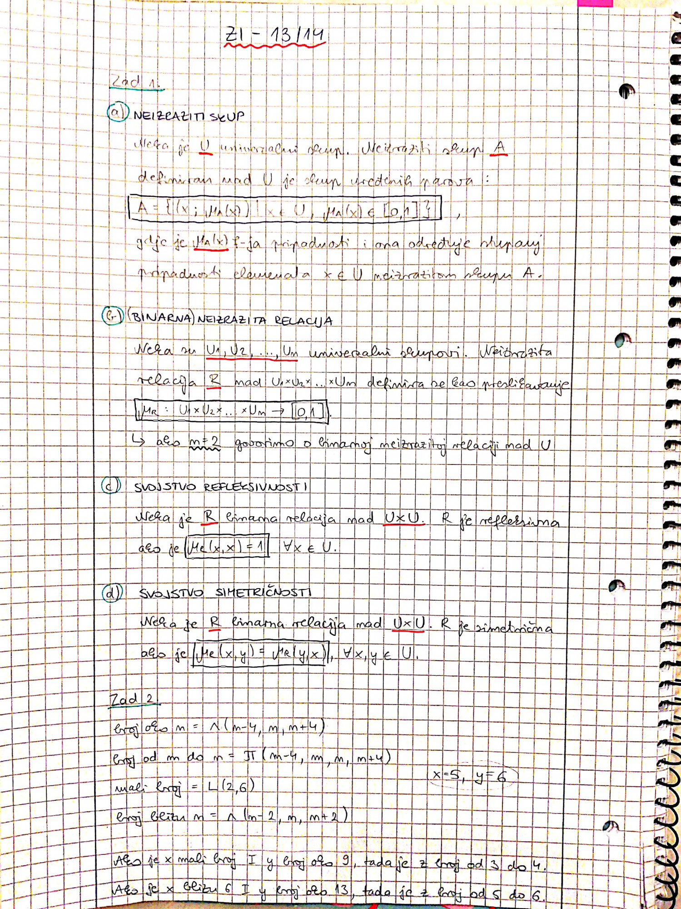
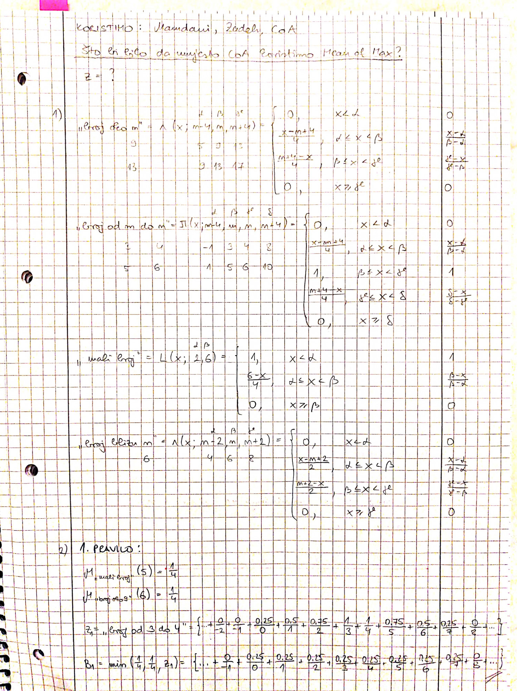
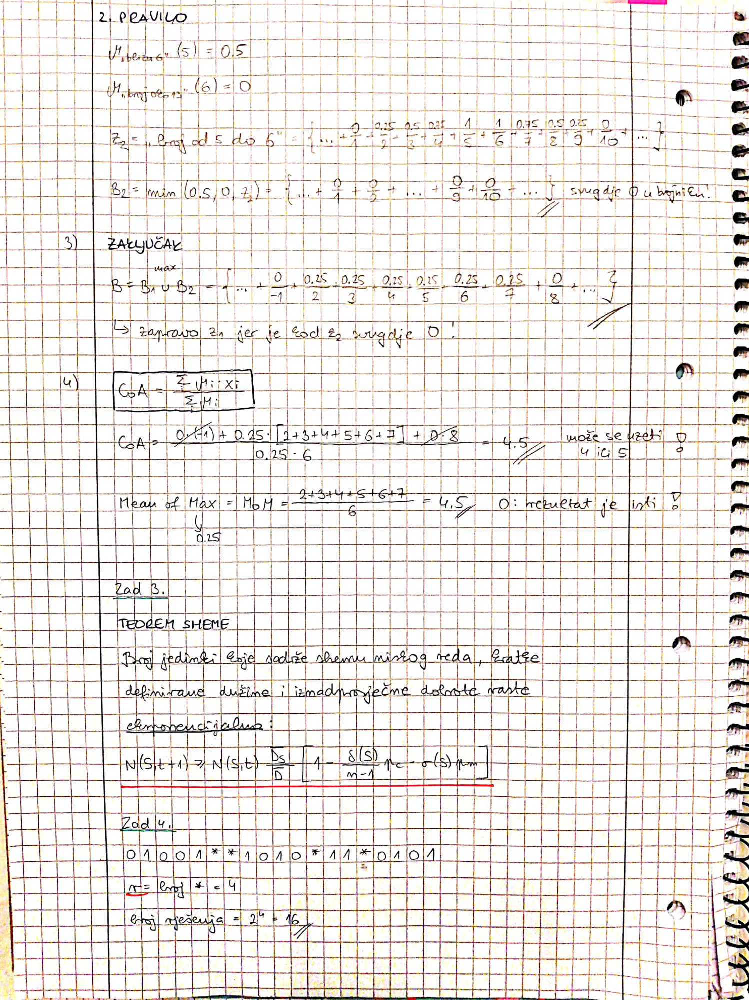
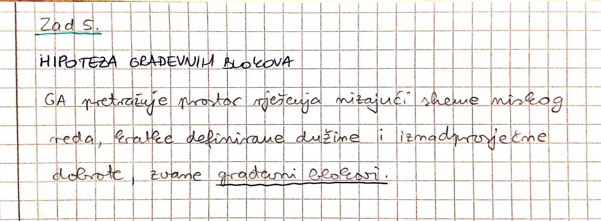

Ako je netko rjesio ovaj zavrsni sto imamo nek uploada svoja rjesenja pls
Jel se mogu dobiti negativni bodovi na ispitu ili ispit nosi max(0, brojOstvarenihBodova)?
Na MIu ih koliko znam nije bilo
Idemo jel to rekao na predavanjima ili?
VrloZbunjen ne bih znao, nisam bio
Jel može netko tko je riješio ZI iz 2013/2014 poslati ovdje
112 evo prvi dio ispita (1. - 5. zadatak), ima li netko ostatak?    
PudingIzMenze Vjj ce bit nesto s fuzzy skupovima iz prvog ciklusa, pa na tom mozes skupit
miki123
PudingIzMenze U pravu si, 3.5 treba ispasti! Ovi 0 i 1 mi se pogubili negdje po putu hahah
imam sutra termin nadoknade od 19 do 20, ima mozda neke dobre duse koja ima ranije i mijenjala bi se sa mnom? ako jos niste spasili macku iz drveta ovaj tjedan, napravite dobro djelo i ispunite si kvotu, pomoglo bi mi bas dosta!!
carrieb Imam 18-19 ako ti jedan sat ranije nešto znači
jel netko odgovarao? kakvi su dojmovi?
i jel ispituje samo profesor ili i asistenti?
itko?
cavlic Mene je ispitao Cupic, prije 10min
kolka je sansa da ce usmeni ispiti biti prije vikenda, ako je pismeni u cetvrtak u 8?
debos Pogledaj u prijašnjim obavijestima na ferwebu kada je bio usmeni prošlih godina…ili pitaj Čupića 🙂
Ima li ista ispita/zadataka osim onog na materijalima?
E jebiga, usmeni je u petak u 8. Ima tko ovdje iskustva s usmenim?